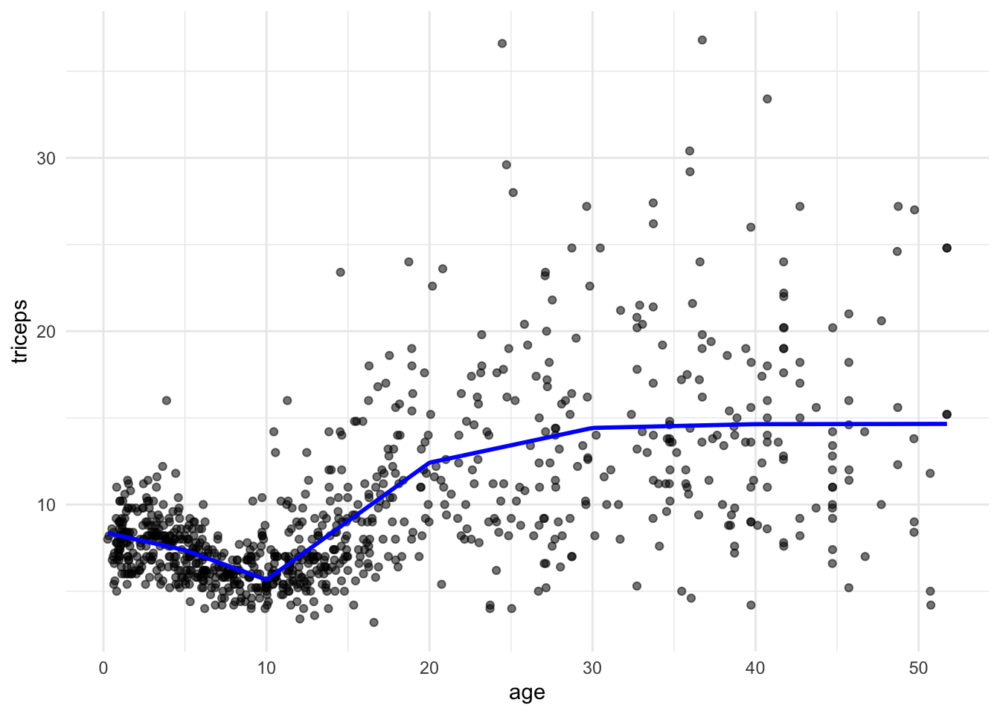
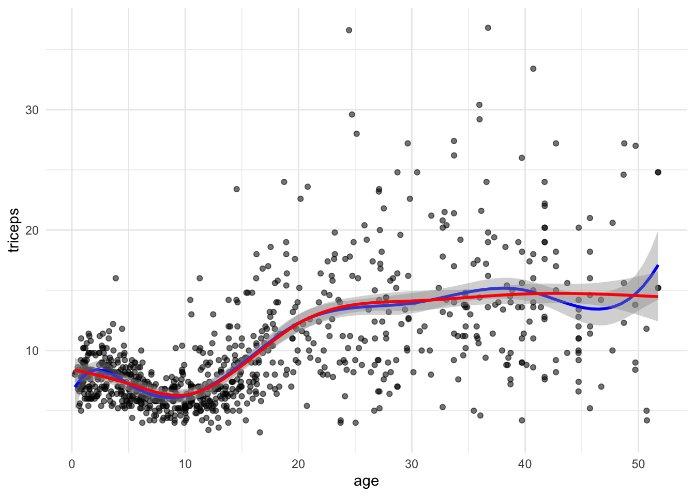
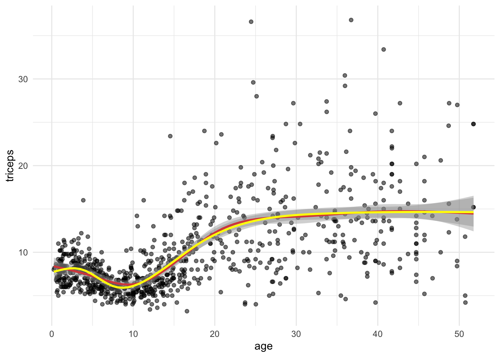

2 Piecewise Regression
2.1 Introduction
An alternative to fit all data points with a single polynomial curve, is to fit segments to different parts of the data, with breakpoints (knots) at pre-determined places.

We can further require continuity, meaning that the segments have to be connected
 Again, the knots need to be specified and the regression equation becomes:
Again, the knots need to be specified and the regression equation becomes:
\[ y = \beta_0 + \beta_1 x + \beta_2 (x-k_1)_{+} + \beta_3 (x-k_2)_{+} + ... + \beta_6 (x-k_p)_{+} + \varepsilon\\ \]
where \[(x-k)_{+} = \begin{cases} 0, & \text{ if } x < k \\ x-k, & \text{ if } x \geq k\\ \end{cases} \]
The approach above may be extended to use polynomial segments. For example, using cubic segments, the model would become
\[ y = \beta_0 + \beta_1 x + \beta_2 x^2 + \beta_3 x^3 + \beta_4 (x-k_1)_{+} + \beta_5 (x-k_1)^2_{+} + \beta_6 (x-k_1)^3_{+} + ... + \varepsilon \]
The above model will be a smooth curve within the intervals bounded by the knots, but the “connection” between the segments will not be smooth. To force smoothness over the entire fitted curve we can restrict the the model above to only include the cubic components:
\[ y = \beta_0 + \beta_1 x + \beta_2 x^2 + \beta_3 x^3 + \beta_4 (x-k_1)^3_{+} + \beta_5 (x-k_2)^3_{+} + \beta_6 (x-k_3)^3_{+} + ... + \varepsilon \]
This will guarantee that the fitted curve is differentiable, with no sharp changes in the direction. This is called a cubic spline.
An improvement of the fitting of splines in the boundary of the data is achieved by using linear fitting before the first knot and after the last one.
2.2 Readings
Read the following chapters of An introduction to statistical learning:
2.3 Practice session
Task 1 - Fit a piecewise linear regression
We will continue the example using the dataset triceps is available in the MultiKink package. The data contains the measurement of the triceps skin fold of 892 females (variable triceps) and we want to model its association with age, using piecewise linear regression with knots at 5,10,20,30 and 40.
First, we will load the data
## Warning: package 'MultiKink' was built under R version 4.0.1## Warning: package 'ggplot2' was built under R version 4.0.2set.seed(1974) #fix the random generator seed
data("triceps") #load the dataset triceps
#notice that the variable of interest
#it is also called tricets. Don't get
#confused!And plot the scatter for triceps and age
#simple scatter
#we can store the scatter in an object
#to use it later
tri.age.plot <- ggplot(triceps, aes(x=age, y=triceps)) +
geom_point(alpha=0.55, color="black") +
theme_minimal()
tri.age.plotWe will fit linear models within the intervals defined by the knots. The predict() will give us the fitted lines.
###Piecewise regression
pred1 <- predict(lm(triceps~age,
data = triceps[triceps$age<5,]))
pred2 <- predict(lm(triceps~age,
data = triceps[triceps$age >=5 & triceps$age<10,]))
pred3 <- predict(lm(triceps~age,
data = triceps[triceps$age>=10 & triceps$age<20,]))
pred4 <- predict(lm(triceps~age,
data = triceps[triceps$age>=20 & triceps$age<30,]))
pred5 <- predict(lm(triceps~age,
data = triceps[triceps$age>=30 & triceps$age<40,]))
pred6 <- predict(lm(triceps~age,
data = triceps[triceps$age>=40,]))And we can now add the segments to the scatter plot
tri.age.plot +
geom_line(data=triceps[triceps$age<5,],
aes(y = pred1, x=age), size = 1, col="blue") +
geom_line(data=triceps[triceps$age >=5 & triceps$age<10,],
aes(y = pred2, x=age), size = 1, col="blue") +
geom_line(data=triceps[triceps$age>=10 & triceps$age<20,],
aes(y = pred3, x=age), size = 1, col="blue") +
geom_line(data=triceps[triceps$age>=20 & triceps$age<30,],
aes(y = pred4, x=age), size = 1, col="blue") +
geom_line(data=triceps[triceps$age>=30 & triceps$age<40,],
aes(y = pred5, x=age), size = 1, col="blue") +
geom_line(data=triceps[triceps$age>=40,],
aes(y = pred6, x=age), size = 1, col="blue") We can restrict the segments to be connected, i.e., to fit a continuous line. The model is
\[ y = \beta_0 + \beta_1 x + \beta_2 (x-k_1)_{+} + \beta_3 (x-k_2)_{+} + ... + \beta_6 (x-k_p)_{+} + \varepsilon\\ \]
where \[(x-k)_{+} = \begin{cases} 0, & \text{ if } x < k \\ x-k, & \text{ if } x \geq k\\ \end{cases} \]
So, we need to add the terms \((x-k)\) when \(x \geq k\). We will do this by adding \(I((age-k)*(age >= k))\) terms to the linear model. Note that \((age >= k)\) is a logical statement that will be 0 (\(FALSE\)) of 1 (\(TRUE\)) and I() evaluates that all expression.
pred7 <- predict(lm(triceps~ age + I((age-5)*(age>=5)) +
I((age-10)*(age >= 10)) +
I((age-20)*(age >= 20)) +
I((age-30)*(age >= 30)) +
I((age-40)*(age >= 40)),
data = triceps))
tri.age.plot +
geom_line(data=triceps,
aes(y = pred7, x=age), size = 1, col="blue") 
TRY IT YOURSELF:
- Using the same knots as above, fit a quadratic piecewise regression
See the solution code
pred.quad <- predict(lm(triceps~ age + I(age^2) +
I((age-5)*(age>=5)) + I((age-5)^2*(age>=5)) +
I((age-10)*(age >= 10)) + I((age-5)^2*(age>=5)) +
I((age-20)*(age >= 20)) + I((age-5)^2*(age>=5)) +
I((age-30)*(age >= 30)) + I((age-5)^2*(age>=5)) +
I((age-40)*(age >= 40)) + I((age-5)^2*(age>=5)),
data = triceps))
tri.age.plot +
geom_line(data=triceps,
aes(y = pred.quad, x=age), size = 1, col="blue")
Task 2 - Fit a natural cubic spline
We will the same dataset triceps as in TASK 1 to fit a natural cubic spline for the association of age and triceps.
The function bs() in the splines package generates the B-spline basis matrix
for a polynomial spline, and the function ns() in the same library generates
the B-spline basis matrix matrix for a natural cubic spline (restriction that
the fitted curve linear at the extremes). We will compare both.
library(splines)
library(MultiKink) #for the data
library(ggplot2) #for the plots
set.seed(1974) #fix the random generator seed
data("triceps") #load the dataset triceps
#notice that the variable of interest
#it is also called triceps. Don't get
#confused!
#linear model with the natural cubic splines function
cub.splines.bs <- lm(triceps ~ bs(age, knots = c(5,10,20,30,40)),
data=triceps)
summary(cub.splines.bs)##
## Call:
## lm(formula = triceps ~ bs(age, knots = c(5, 10, 20, 30, 40)),
## data = triceps)
##
## Residuals:
## Min 1Q Median 3Q Max
## -11.5234 -1.6912 -0.2917 1.1356 23.0922
##
## Coefficients:
## Estimate Std. Error t value Pr(>|t|)
## (Intercept) 6.9598 0.9729 7.154 1.77e-12 ***
## bs(age, knots = c(5, 10, 20, 30, 40))1 2.5367 1.7154 1.479 0.1396
## bs(age, knots = c(5, 10, 20, 30, 40))2 -0.3032 0.9629 -0.315 0.7529
## bs(age, knots = c(5, 10, 20, 30, 40))3 -1.9092 1.2993 -1.469 0.1421
## bs(age, knots = c(5, 10, 20, 30, 40))4 7.4056 1.2179 6.081 1.78e-09 ***
## bs(age, knots = c(5, 10, 20, 30, 40))5 6.1050 1.4043 4.347 1.54e-05 ***
## bs(age, knots = c(5, 10, 20, 30, 40))6 10.1770 1.5427 6.597 7.23e-11 ***
## bs(age, knots = c(5, 10, 20, 30, 40))7 3.9428 1.9082 2.066 0.0391 *
## bs(age, knots = c(5, 10, 20, 30, 40))8 10.1473 1.7545 5.784 1.01e-08 ***
## ---
## Signif. codes: 0 '***' 0.001 '**' 0.01 '*' 0.05 '.' 0.1 ' ' 1
##
## Residual standard error: 3.743 on 883 degrees of freedom
## Multiple R-squared: 0.4261, Adjusted R-squared: 0.4209
## F-statistic: 81.94 on 8 and 883 DF, p-value: < 2.2e-16cub.splines.ns <- lm(triceps ~ ns(age, knots = c(5,10,20,30,40)),
data=triceps)
summary(cub.splines.ns)##
## Call:
## lm(formula = triceps ~ ns(age, knots = c(5, 10, 20, 30, 40)),
## data = triceps)
##
## Residuals:
## Min 1Q Median 3Q Max
## -10.4875 -1.6873 -0.3665 1.1146 22.8643
##
## Coefficients:
## Estimate Std. Error t value Pr(>|t|)
## (Intercept) 8.3811 0.5219 16.059 < 2e-16 ***
## ns(age, knots = c(5, 10, 20, 30, 40))1 -3.5592 0.6712 -5.303 1.44e-07 ***
## ns(age, knots = c(5, 10, 20, 30, 40))2 5.7803 1.0379 5.569 3.39e-08 ***
## ns(age, knots = c(5, 10, 20, 30, 40))3 5.5118 0.9416 5.853 6.78e-09 ***
## ns(age, knots = c(5, 10, 20, 30, 40))4 6.9070 0.9050 7.632 5.99e-14 ***
## ns(age, knots = c(5, 10, 20, 30, 40))5 5.4136 1.3783 3.928 9.24e-05 ***
## ns(age, knots = c(5, 10, 20, 30, 40))6 6.6460 1.0829 6.137 1.27e-09 ***
## ---
## Signif. codes: 0 '***' 0.001 '**' 0.01 '*' 0.05 '.' 0.1 ' ' 1
##
## Residual standard error: 3.759 on 885 degrees of freedom
## Multiple R-squared: 0.4199, Adjusted R-squared: 0.416
## F-statistic: 106.8 on 6 and 885 DF, p-value: < 2.2e-16Notice that are less regression parameters for the natural spline due to the
linearity restriction. We can see this in the plot. To plot we could either
get predictions from the fitted models or fit the models in the ggplot
function directly:
#simple scatter
tri.age.plot <- ggplot(triceps, aes(x=age, y=triceps)) +
geom_point(alpha=0.55, color="black") +
theme_minimal()
tri.age.plot +
stat_smooth(method = "lm",
formula = y~bs(x,knots = c(5,10,20,30,40)),
lty = 1, col = "blue") +
stat_smooth(method = "lm",
formula = y~ns(x,knots = c(5,10,20,30,40)),
lty = 1, col = "red") 
TRY IT YOURSELF:
- Fit a natural spline with 6 degrees of freedom and compare it with the
natural spline using
knots = c(5,10,20,30,40). What is the difference?
See the solution code
tri.age.plot +
stat_smooth(method = "lm",
formula = y~ns(x,knots = c(5,10,20,30,40)),
lty = 1, col = "red") +
stat_smooth(method = "lm",
formula = y~ns(x,df=6),
lty = 1, col = "yellow") 
#df=6 also chooses 5 knots but the knots
#are based on the quantiles of the data
#in this case the knots are at values:
attr(ns(triceps$age, df=6), "knots") ## 16.66667% 33.33333% 50% 66.66667% 83.33333%
## 3.76 7.67 12.21 18.12 32.55
- Calculate the MSE (or the root mean squared error) for the models using
natural cubic splines with \(df\) from 2 (linear model) up to 20. You can use the library
caret.
See the solution code
## Loading required package: latticeset.seed(1001)
#repeated CV for the MSE
trC.lm <- trainControl(method = "repeatedcv",
number = 10,
repeats = 10)
#function to fit a spline with x degrees of freedom
my.spline.f <- function(x) {
#need to construct the model formula
spline.formula <- as.formula(paste("triceps ~ ns(age, df=",x, ")" ))
pol.model <- train(spline.formula,
data = triceps,
method = "lm",
trControl = trC.lm)
RMSE.cv = pol.model$results[2] #extracts the RMSE
}
#RMSE
t(sapply(2:20, my.spline.f)) #Computes the RMSE for splines
#with df degrees 2 to 20
###########################################################################
#if you want to plot the curves,
#it is tricky to get ggplot to work
#within a loop. This is a solutions:
col.ran <- sample(colours(), 20) #colours for the lines
my.plot<- tri.age.plot #scatterplot
for (i in 2:20){
#builds the stat_smooth with df=i
loop_input <- paste("stat_smooth(method = \"lm\",
formula = y~ns(x,df=",i,"),
lty = 1, col =\"",col.ran[i],"\",
se = FALSE)", sep="")
#updates the scatter plot with
#the new spline
my.plot <- my.plot + eval(parse(text=loop_input))
}
my.plot
2.4 Exercises
Solve the following exercise:
- The dataset SA_heart.csv contains on coronary heart disease status (variable chd) and several risk factors including the cumulative tobacco comsumption tobacco.
Fit a logistic model for chd using the predictor tobacco (as a linear effect) and compute its AIC
Plot the fitted curve in a)
Fit a logistic model for chd with a natural cubic spline for the predictor tobacco, with \(df\) 5 and 10. Compute the AIC of the two models.
Plot the fitted curves in c)
Compute the cross-validated ROC of the models a) and c) (use the
caretpackage)
See the solution code for e)
library(caret)
library(splines)
set.seed(2001)
SA_heart <- read.csv("https://www.dropbox.com/s/cwkw3p91zyizcqz/SA_heart.csv?dl=1")
# caret will give an error for factors coded as 0 and 1
# because it uses the factors names to create
# names of internal variables. This way it is better
#to use an outcome variable with strings as the factor names
SA_heart$chd.f <- ifelse(SA_heart$chd ==1,
"chd",
"nochd")
#sets the control for 10-fold cross-validation, 10 times
# the classProbs = TRUE and summaryFunction = twoClassSummary
# store the information to compute the area under the ROC
trC.lm <- trainControl(method = "repeatedcv",
number = 10,
repeats = 10,
classProbs = TRUE, #necessary for
summaryFunction = twoClassSummary) #the AUC ROC
#linear effect
roc.l <- train(form = chd.f ~ tobacco,
data = SA_heart,
method = "glm",
family = "binomial",
trControl = trC.lm,
metric = "ROC")
roc.5 <- train(form = chd.f ~ ns(tobacco,df=5),
data = SA_heart,
method = "glm",
family = "binomial",
trControl = trC.lm,
metric = "ROC")
#cubic effect
roc.10 <- train(form = chd.f ~ ns(tobacco,df=10),
data = SA_heart,
method = "glm",
family = "binomial",
trControl = trC.lm,
metric = "ROC")
roc.l
roc.5
roc.10
- Which model would you prefer?